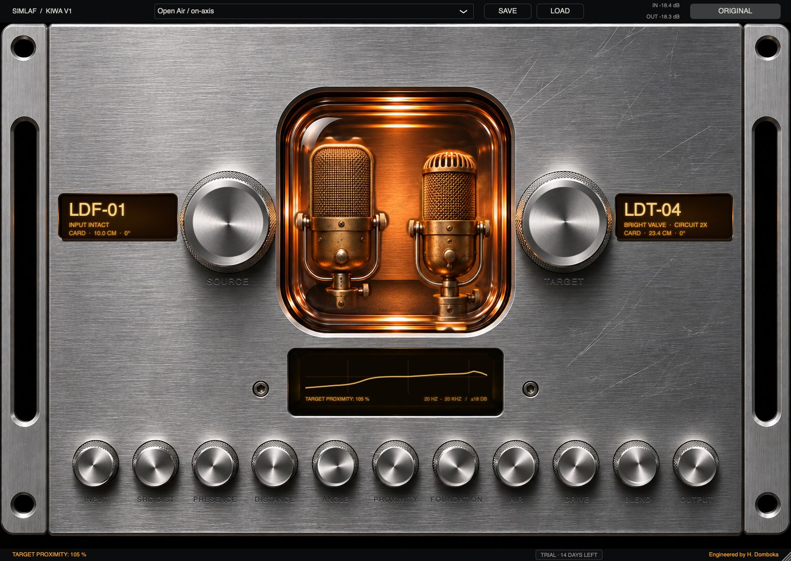
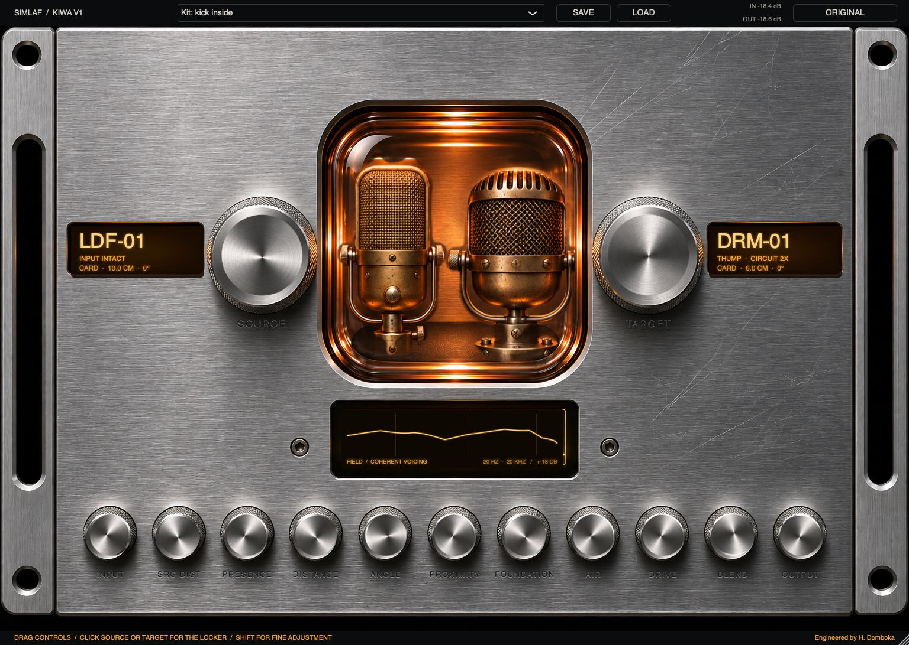

Reference Omni
Measurement omni, the reference, flat
SIMLAF · Black Friday launch
The store opens on Black FridayPlanned opening ·
Save your cart. Checkout opens at launch.
KIWA · Microphone Modelling
61 original microphone designs. Shape distance, angle, proximity and circuit colour around the recording you already love.
US $149One-time licence · 3 computers · No expiry
KIWA 1.3.0 · AU, VST3 & standalone · Universal macOS

Actual KIWA 1.3.0 interface
Find the voice inside the recording
Tube, condenser, pencil, ribbon, dynamic, drums, boom, instrument, miniature, boundary and reference families.
Independent placementTarget distance, angle and proximity are separate decisions, alongside each design's supported polar patterns.
Four tonal decisionsKeep a lean foundation, add close-range body, soften presence or open the upper air independently.
Recorded chain intactSource inverse correction is off by default. Your recorded preamp character stays in the performance.
The model becomes the instrument
A 1,024-tap minimum-phase response combines authored voicing with bounded placement and proximity. Conservative source correction is an explicit option.
Optional capsule and circuit behaviour adds level-dependent response, tube/FET character and transformer colour where the selected design provides it.
Realtime response design runs on a background worker. The audio path consumes complete prepared designs and crossfades filter changes.
These are original authored microphone designs, not measured replicas of named commercial microphones. KIWA shapes the recorded signal; a single-channel profile cannot reconstruct room pickup or undo source clipping.
61 designs · 11 families
Start with the application or follow the construction: intimate vocals, broadcast speech, close drums, bowed strings, a piano lid or the far side of a room.
Measurement omni, the reference, flat
1940s broadcast tube, dual-diaphragm, warm low mids, silky top
1960s tube, smoother top than LDT-01, gentle presence
Modern tube, open and airy, fast
Vintage small-body tube, forward and bright
1960s FET studio standard, flat with a presence lift
Modern transformerless FET, very low noise, neutral
1970s FET, thick low mids, broadcast weight
Budget-class FET, brittle 8-10 kHz lift (the typical source)
Modern high-end FET, extended, airy
Edge-terminated large diaphragm, fast and detailed
Classic pencil condenser, neutral, slight HF rise
Modern pencil, ruler flat
Omni pencil, free-field flat
Vintage tube pencil, rich
Classic passive ribbon, figure-8, dark and smooth
Modern active ribbon, extended top
1930s broadcast ribbon, heavy proximity
Broadcast large dynamic, bass-rich, presence bump
Stage vocal dynamic, presence peak, tight bass
Instrument dynamic, mid-forward
Premium handheld dynamic, extended both ends
Vintage broadcast omni dynamic
Kick-drum dynamic, large diaphragm, deep low end, scooped mids, presence snap
Lavalier electret, chest-position voicing
Kick inside
Kick outside / floor tom
Snare top / percussion
Snare bottom
Rack tom / floor tom
Boundary kick / percussion
Overheads / cymbals
Crushed room / distant kit
Indoor dialogue / short boom
Exterior dialogue / long interference tube
Interior speech / overhead
Voice / documentary
Saxophone / brass
Violin / acoustic guitar
Electric guitar / amplifier
Piano / harp
Bass cabinet / double bass
Brass clip / percussion
Intimate vocal / cello
Lead vocal / room
Deep vocal / brass
Modern vocal / pop
Natural vocal / ensemble
Speech / vocal / piano
Acoustic / hi-hat
Strings / piano / classical
Spot mic / percussion
Strings / brass / room
Active ribbon / acoustic
Stage vocal / loud sources
Broadcast / narration
Guitar / brass / snare
Lavalier / theatre
Headset / speech
Conference / piano lid
Theatre / stage / percussion
No matching design. Clear the search or choose another family.
A different decision for every source

Native KIWA 1.3.0 interface. Chamber artwork illustrates microphone families; the displays report the selected distance and angle.
Inside KIWA
Explore the microphone locker, placement, tone, circuits, realtime engine and session workflow.
Every control has a purpose
| Control | Range | Default |
|---|---|---|
| Source microphone | 61 models | LDF-01 |
| Source pattern | per model | cardioid |
| Source distance | 2–200 cm | 10 cm |
| Source angle | 0–180° | 0° |
| Input trim | ±24 dB | 0 |
| Target microphone | 61 models | LDT-04 "Bright Valve" |
| Target pattern | per model | cardioid |
| Target distance | 2–200 cm | 23.4 cm |
| Target angle | 0–180° | 0° |
| Target proximity | 0–200 % | 100 % |
| Foundation (low shelf near 180 Hz) | −12 to +6 dB | −8.5 dB |
| Presence (bell at 4.5 kHz) | ±6 dB | 0 |
| Air (shelf above 9 kHz) | 0 to +10 dB | +5.5 dB |
| Source correction | Input intact / Conservative profile | Input intact |
| Drive (circuit colour) | −1 to +1 | 0 |
| Circuit stage on/off | on/off | on |
| Self-noise | on/off | off |
| Oversampling | Off / 2x / 4x | 2x |
| Blend (dry/wet) | 0–100 % | 100 % |
| Output trim | ±24 dB | 0 |
| Circuit calibration | ±24 dB | 0 |
| Correction ceiling | 3–18 dB | 12 dB |
Source distance and angle are descriptive metadata in Input intact mode. Enable Conservative source profile explicitly to apply source-response correction.
Built for the session
The KIWA 1.3.0 installer contains Intel and Apple Silicon binaries for AU, VST3 and the standalone app. macOS 10.13 or later. Runtime validation to date is on Intel; Apple Silicon runtime and clean-machine installation remain in the release checklist.
Mono, stereo and mono-to-stereo operation. Saved setups, host automation and factory target presets that retain the recorded source settings.
Oversampling Off, 2× or 4×. Reported processing latency is 0, 32 or 16 samples respectively when the colour chain runs. Dry blend is aligned to the oversampler.
The current installer is not Developer ID signed or notarized. macOS may block first open. Read the supplied installation notes; contact SIMLAF support if you need help.
KIWA 1.3.0 · Licensed release
US $149One-time licence · 3 computers · No expiry
The installer includes a 14-day trial. A SIMLAF key activates KIWA on up to three computers. After an expired trial without an active key, audio passes through untouched; sessions still load and save. Activate online once per computer; KIWA then works offline. When connected, it checks the licence periodically. A network outage alone does not disable an activated licence.
KIWA has its own licence. It is a separate purchase and is not unlocked by The Whole Studio key. Your licence covers KIWA 1.x, with free updates within 1.x. A new major version may be offered as a paid upgrade; your current licence does not expire.
Version 1.3.0 has a new plug-in identity. Instances saved with earlier preview builds do not automatically change to the new plug-in.
Store checkout is not open yet.
View store opening details ↑